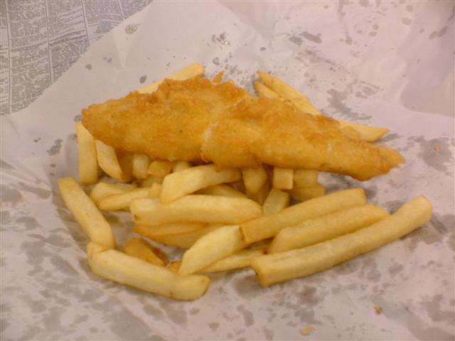

Fish and Chips

Description
A classic Kiwi Friday night treat — fresh white fish in a crispy golden batter, served alongside thick-cut chips.
Simple, satisfying, and best eaten straight from the paper!
AI Generated.
Ingredients
- 600g white fish fillets (e.g. snapper or cod)
- 1.5 cups plain flour
- 1 teaspoons baking powder
- 1 cups cold water
- 1 teaspoons salt
- 4 pieces large potatoes
- 4 cups vegetable oil (for frying)
Steps
- Prepare the chips: Peel and cut 4 pieces large potatoes into thick strips (about 1.5 cm wide). Pat dry thoroughly with a paper towel — this helps them crisp up.
- Heat the oil: Pour 4 cups vegetable oil (for frying) into a large, deep saucepan and heat over medium-high heat to around 180°C. If you don't have a thermometer, drop in a small piece of potato — it should sizzle immediately.
- Fry the chips: Cook the chips in batches for 5–7 minutes until golden and cooked through. Remove with a slotted spoon and drain on paper towels. Season with a pinch of 1 teaspoons salt.
- Make the batter: In a bowl, whisk together 1.5 cups plain flour, 1 teaspoons baking powder, and 1 teaspoons salt. Gradually add 1 cups cold water and whisk until you have a smooth, thick batter.
- Prepare the fish: Pat 600g white fish fillets (e.g. snapper or cod) dry and cut into serving-sized pieces. Lightly dust each piece with a little plain flour from 1.5 cups plain flour, then dip into the batter to coat evenly.
- Fry the fish: Carefully lower the battered fish into the hot oil and fry for 4–5 minutes, turning once, until the batter is deep golden and crispy. Drain on paper towels.
- Serve: Serve the fish and chips together immediately, seasoned with extra 1 teaspoons salt and a squeeze of lemon if desired.